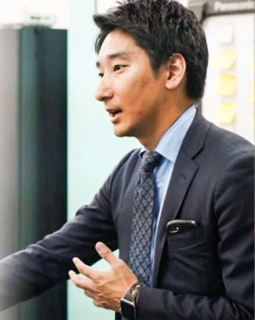
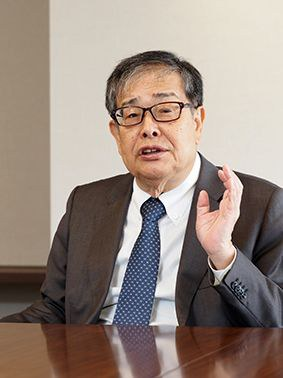

COMPANY
| 社名 | 株式会社 永 -トコシエ-（Tokoshie Co., Ltd.） |
|---|---|
| 設立年月 | 2024年10月 |
| 代表取締役社長 | 永山 洋介 |
| 所在地 |
【東京本社】〒111-0052 東京都台東区柳橋1-9-9 【北海道支社】〒063-0814 北海道札幌市西区琴似四条6-4-58 |
| 事業内容 |
エンゲージメントマネジメント（育成、制度、風土変革支援） エントリーマネジメント（採用支援、採用代行） リスキリング（研修の企画、運営） アライアンス（協業先のマッチング、ファイナンス支援） |
| お問い合わせ |
y.nagayama@gw-tokoshie.com 070-4416-3932 |
REPRESENTATIVE

永山 洋介NAGAYAMA YOSUKE
代表取締役社長
ADVISOR

中川 信行NAKAGAWA NOBUYUKI
顧問（元 株式会社マイナビ 会長）
採用・組織・営業・資金まで、事業成長の課題はまとめてご相談ください。
お問い合わせはこちら →